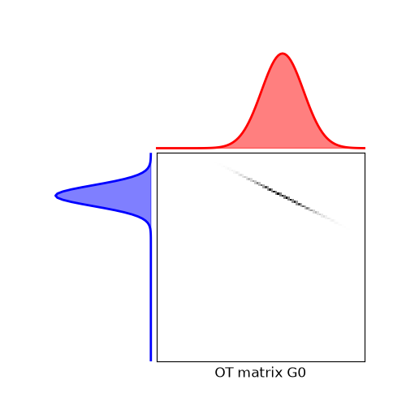
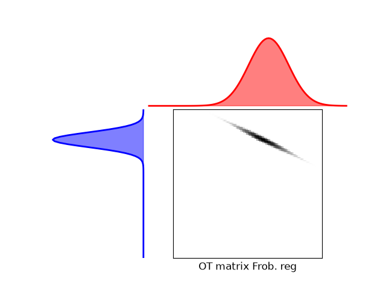
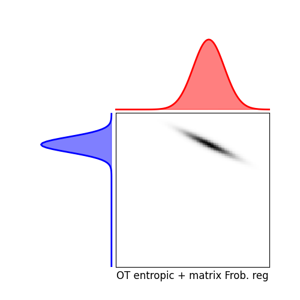
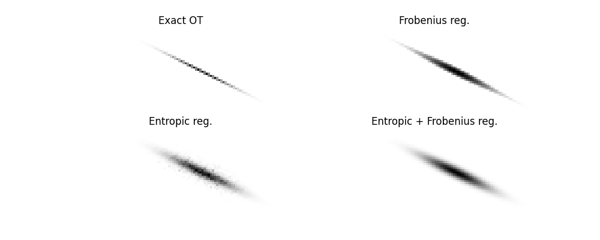

Note
Go to the end to download the full example code.
Regularized OT with generic solver
Illustrates the use of the generic solver for regularized OT with user-designed regularization term. It uses Conditional gradient as in [6] and generalized Conditional Gradient as proposed in [5,7].
[5] N. Courty; R. Flamary; D. Tuia; A. Rakotomamonjy, Optimal Transport for Domain Adaptation, in IEEE Transactions on Pattern Analysis and Machine Intelligence , vol.PP, no.99, pp.1-1.
[6] Ferradans, S., Papadakis, N., Peyré, G., & Aujol, J. F. (2014). Regularized discrete optimal transport. SIAM Journal on Imaging Sciences, 7(3), 1853-1882.
[7] Rakotomamonjy, A., Flamary, R., & Courty, N. (2015). Generalized conditional gradient: analysis of convergence and applications. arXiv preprint arXiv:1510.06567.
# sphinx_gallery_thumbnail_number = 5
import numpy as np
import matplotlib.pylab as pl
import ot
import ot.plot
Generate data
Solve EMD

(<Axes: >, <Axes: >, <Axes: >)
Solve EMD with Frobenius norm regularization

It. |Loss |Relative loss|Absolute loss
------------------------------------------------
0|1.760578e-01|0.000000e+00|0.000000e+00
1|1.669467e-01|5.457501e-02|9.111116e-03
2|1.665639e-01|2.298097e-03|3.827801e-04
3|1.664378e-01|7.573707e-04|1.260551e-04
4|1.664075e-01|1.822159e-04|3.032210e-05
5|1.663910e-01|9.895078e-05|1.646452e-05
6|1.663851e-01|3.549058e-05|5.905106e-06
7|1.663814e-01|2.252945e-05|3.748482e-06
8|1.663785e-01|1.757545e-05|2.924177e-06
9|1.663767e-01|1.060202e-05|1.763930e-06
10|1.663751e-01|9.640161e-06|1.603883e-06
11|1.663737e-01|8.501133e-06|1.414365e-06
12|1.663727e-01|5.654674e-06|9.407836e-07
13|1.663720e-01|4.674546e-06|7.777135e-07
14|1.663712e-01|4.600984e-06|7.654712e-07
15|1.663707e-01|3.087272e-06|5.136316e-07
16|1.663702e-01|3.227426e-06|5.369474e-07
17|1.663696e-01|3.398875e-06|5.654694e-07
18|1.663691e-01|2.877154e-06|4.786695e-07
19|1.663687e-01|2.733590e-06|4.547836e-07
It. |Loss |Relative loss|Absolute loss
------------------------------------------------
20|1.663683e-01|2.417235e-06|4.021512e-07
21|1.663678e-01|2.668394e-06|4.439349e-07
22|1.663675e-01|2.063226e-06|3.432536e-07
23|1.663671e-01|2.165567e-06|3.602791e-07
24|1.663668e-01|2.102621e-06|3.498062e-07
25|1.663664e-01|2.004991e-06|3.335631e-07
26|1.663661e-01|2.095035e-06|3.485427e-07
27|1.663658e-01|1.810346e-06|3.011796e-07
28|1.663655e-01|1.730306e-06|2.878632e-07
29|1.663652e-01|1.691085e-06|2.813377e-07
30|1.663649e-01|1.712194e-06|2.848491e-07
31|1.663647e-01|1.599027e-06|2.660216e-07
32|1.663644e-01|1.537822e-06|2.558388e-07
33|1.663641e-01|1.578779e-06|2.626522e-07
34|1.663639e-01|1.196930e-06|1.991260e-07
35|1.663637e-01|1.479310e-06|2.461035e-07
36|1.663635e-01|1.298958e-06|2.160992e-07
37|1.663633e-01|1.226052e-06|2.039700e-07
38|1.663630e-01|1.407332e-06|2.341280e-07
39|1.663628e-01|1.121523e-06|1.865798e-07
It. |Loss |Relative loss|Absolute loss
------------------------------------------------
40|1.663627e-01|1.025285e-06|1.705692e-07
41|1.663625e-01|9.811935e-07|1.632338e-07
42|1.663623e-01|1.061869e-06|1.766550e-07
43|1.663622e-01|1.088559e-06|1.810950e-07
44|1.663620e-01|9.551075e-07|1.588936e-07
45|1.663618e-01|1.014606e-06|1.687917e-07
46|1.663617e-01|1.015650e-06|1.689652e-07
47|1.663615e-01|8.803835e-07|1.464619e-07
48|1.663614e-01|8.544397e-07|1.421458e-07
49|1.663612e-01|7.635494e-07|1.270250e-07
50|1.663611e-01|7.780657e-07|1.294399e-07
51|1.663610e-01|7.944753e-07|1.321697e-07
52|1.663609e-01|7.184089e-07|1.195151e-07
53|1.663607e-01|8.663411e-07|1.441251e-07
54|1.663606e-01|7.813255e-07|1.299818e-07
55|1.663605e-01|7.969488e-07|1.325808e-07
56|1.663603e-01|7.436876e-07|1.237201e-07
57|1.663602e-01|7.143391e-07|1.188376e-07
58|1.663601e-01|6.864534e-07|1.141985e-07
59|1.663600e-01|6.857649e-07|1.140838e-07
It. |Loss |Relative loss|Absolute loss
------------------------------------------------
60|1.663599e-01|7.077854e-07|1.177471e-07
61|1.663598e-01|6.728464e-07|1.119346e-07
62|1.663597e-01|6.234005e-07|1.037087e-07
63|1.663596e-01|5.925432e-07|9.857522e-08
64|1.663595e-01|5.223502e-07|8.689791e-08
65|1.663594e-01|5.685675e-07|9.458653e-08
66|1.663593e-01|5.089579e-07|8.466987e-08
67|1.663592e-01|6.008686e-07|9.996001e-08
68|1.663591e-01|5.507201e-07|9.161730e-08
69|1.663590e-01|5.377172e-07|8.945410e-08
70|1.663589e-01|4.843623e-07|8.057800e-08
71|1.663588e-01|4.893034e-07|8.139994e-08
72|1.663588e-01|4.561640e-07|7.588689e-08
73|1.663587e-01|4.885435e-07|8.127345e-08
74|1.663586e-01|4.125727e-07|6.863502e-08
75|1.663585e-01|4.081210e-07|6.789442e-08
76|1.663585e-01|4.562190e-07|7.589589e-08
77|1.663584e-01|5.554839e-07|9.240940e-08
78|1.663583e-01|4.948121e-07|8.231610e-08
79|1.663582e-01|4.499924e-07|7.485994e-08
It. |Loss |Relative loss|Absolute loss
------------------------------------------------
80|1.663582e-01|4.292707e-07|7.141268e-08
81|1.663581e-01|4.076378e-07|6.781384e-08
82|1.663580e-01|3.436588e-07|5.717040e-08
83|1.663580e-01|4.070341e-07|6.771337e-08
84|1.663579e-01|3.680297e-07|6.122465e-08
85|1.663578e-01|3.546290e-07|5.899532e-08
86|1.663578e-01|4.509493e-07|7.501891e-08
87|1.663577e-01|3.720299e-07|6.189004e-08
88|1.663576e-01|4.068402e-07|6.768098e-08
89|1.663576e-01|3.074031e-07|5.113883e-08
90|1.663575e-01|3.748969e-07|6.236692e-08
91|1.663575e-01|3.451085e-07|5.741138e-08
92|1.663574e-01|3.413178e-07|5.678075e-08
93|1.663574e-01|3.359396e-07|5.588603e-08
94|1.663573e-01|3.291271e-07|5.475270e-08
95|1.663572e-01|3.293071e-07|5.478261e-08
96|1.663572e-01|3.094564e-07|5.148030e-08
97|1.663571e-01|2.921218e-07|4.859654e-08
98|1.663571e-01|2.648265e-07|4.405576e-08
99|1.663570e-01|3.304197e-07|5.496765e-08
It. |Loss |Relative loss|Absolute loss
------------------------------------------------
100|1.663570e-01|3.205966e-07|5.333349e-08
101|1.663569e-01|2.957885e-07|4.920646e-08
102|1.663569e-01|2.603218e-07|4.330633e-08
103|1.663569e-01|2.644096e-07|4.398636e-08
104|1.663568e-01|2.868374e-07|4.771735e-08
105|1.663568e-01|3.023438e-07|5.029694e-08
106|1.663567e-01|2.363974e-07|3.932629e-08
107|1.663567e-01|2.821861e-07|4.694353e-08
108|1.663566e-01|2.917226e-07|4.852999e-08
109|1.663566e-01|2.351657e-07|3.912135e-08
110|1.663565e-01|2.800888e-07|4.659460e-08
111|1.663565e-01|2.556844e-07|4.253477e-08
112|1.663565e-01|2.101852e-07|3.496566e-08
113|1.663564e-01|2.143122e-07|3.565221e-08
114|1.663564e-01|2.513780e-07|4.181833e-08
115|1.663563e-01|2.311899e-07|3.845991e-08
116|1.663563e-01|2.342579e-07|3.897027e-08
117|1.663563e-01|2.178142e-07|3.623475e-08
118|1.663562e-01|2.358231e-07|3.923065e-08
119|1.663562e-01|2.402907e-07|3.997384e-08
It. |Loss |Relative loss|Absolute loss
------------------------------------------------
120|1.663561e-01|2.565224e-07|4.267407e-08
121|1.663561e-01|2.200381e-07|3.660468e-08
122|1.663561e-01|2.081655e-07|3.462959e-08
123|1.663560e-01|2.437787e-07|4.055405e-08
124|1.663560e-01|1.918928e-07|3.192251e-08
125|1.663560e-01|2.028104e-07|3.373873e-08
126|1.663559e-01|1.620420e-07|2.695665e-08
127|1.663559e-01|1.769910e-07|2.944350e-08
128|1.663559e-01|1.901214e-07|3.162781e-08
129|1.663558e-01|2.248171e-07|3.739964e-08
130|1.663558e-01|1.947031e-07|3.238999e-08
131|1.663558e-01|1.973556e-07|3.283124e-08
132|1.663557e-01|1.827801e-07|3.040651e-08
133|1.663557e-01|2.029551e-07|3.376274e-08
134|1.663557e-01|1.749633e-07|2.910614e-08
135|1.663556e-01|2.044018e-07|3.400339e-08
136|1.663556e-01|1.773860e-07|2.950915e-08
137|1.663556e-01|1.810515e-07|3.011893e-08
138|1.663556e-01|1.726333e-07|2.871850e-08
139|1.663555e-01|1.629448e-07|2.710677e-08
It. |Loss |Relative loss|Absolute loss
------------------------------------------------
140|1.663555e-01|1.550954e-07|2.580097e-08
141|1.663555e-01|2.053401e-07|3.415945e-08
142|1.663554e-01|1.657553e-07|2.757430e-08
143|1.663554e-01|1.622977e-07|2.699911e-08
144|1.663554e-01|1.745864e-07|2.904339e-08
145|1.663554e-01|1.643929e-07|2.734764e-08
146|1.663553e-01|1.451168e-07|2.414095e-08
147|1.663553e-01|1.620844e-07|2.696361e-08
148|1.663553e-01|1.460663e-07|2.429890e-08
149|1.663553e-01|1.483641e-07|2.468114e-08
150|1.663552e-01|1.413107e-07|2.350778e-08
151|1.663552e-01|1.347709e-07|2.241984e-08
152|1.663552e-01|1.524089e-07|2.535402e-08
153|1.663552e-01|1.638024e-07|2.724937e-08
154|1.663551e-01|1.581713e-07|2.631261e-08
155|1.663551e-01|1.224170e-07|2.036470e-08
156|1.663551e-01|1.521732e-07|2.531479e-08
157|1.663551e-01|1.430895e-07|2.380367e-08
158|1.663550e-01|1.314782e-07|2.187206e-08
159|1.663550e-01|1.678995e-07|2.793092e-08
It. |Loss |Relative loss|Absolute loss
------------------------------------------------
160|1.663550e-01|1.240491e-07|2.063619e-08
161|1.663550e-01|1.419641e-07|2.361643e-08
162|1.663550e-01|1.385635e-07|2.305073e-08
163|1.663549e-01|1.442790e-07|2.400153e-08
164|1.663549e-01|1.388963e-07|2.310608e-08
165|1.663549e-01|1.226898e-07|2.041005e-08
166|1.663549e-01|1.168132e-07|1.943245e-08
167|1.663548e-01|1.193300e-07|1.985112e-08
168|1.663548e-01|1.228166e-07|2.043113e-08
169|1.663548e-01|1.267728e-07|2.108926e-08
170|1.663548e-01|1.377074e-07|2.290828e-08
171|1.663548e-01|1.246988e-07|2.074424e-08
172|1.663547e-01|1.178106e-07|1.959835e-08
173|1.663547e-01|1.290212e-07|2.146328e-08
174|1.663547e-01|1.210762e-07|2.014159e-08
175|1.663547e-01|1.305489e-07|2.171742e-08
176|1.663547e-01|1.080205e-07|1.796971e-08
177|1.663546e-01|1.077142e-07|1.791876e-08
178|1.663546e-01|1.231012e-07|2.047846e-08
179|1.663546e-01|1.154717e-07|1.920926e-08
It. |Loss |Relative loss|Absolute loss
------------------------------------------------
180|1.663546e-01|1.099821e-07|1.829603e-08
181|1.663546e-01|1.014430e-07|1.687551e-08
182|1.663545e-01|1.086045e-07|1.806686e-08
183|1.663545e-01|9.685350e-08|1.611202e-08
184|1.663545e-01|9.256526e-08|1.539865e-08
185|1.663545e-01|9.798911e-08|1.630093e-08
186|1.663545e-01|9.658834e-08|1.606790e-08
187|1.663545e-01|1.198947e-07|1.994502e-08
188|1.663544e-01|1.006155e-07|1.673784e-08
189|1.663544e-01|1.147466e-07|1.908860e-08
190|1.663544e-01|9.885043e-08|1.644420e-08
191|1.663544e-01|9.013360e-08|1.499412e-08
192|1.663544e-01|1.057008e-07|1.758380e-08
193|1.663544e-01|1.131763e-07|1.882737e-08
194|1.663543e-01|1.109836e-07|1.846260e-08
195|1.663543e-01|9.082014e-08|1.510832e-08
196|1.663543e-01|9.574359e-08|1.592736e-08
197|1.663543e-01|8.459704e-08|1.407308e-08
198|1.663543e-01|8.863245e-08|1.474439e-08
199|1.663543e-01|1.011727e-07|1.683052e-08
It. |Loss |Relative loss|Absolute loss
------------------------------------------------
200|1.663542e-01|9.515093e-08|1.582876e-08
(<Axes: >, <Axes: >, <Axes: >)
Solve EMD with entropic regularization
It. |Loss |Relative loss|Absolute loss
------------------------------------------------
0|1.692289e-01|0.000000e+00|0.000000e+00
1|1.617643e-01|4.614437e-02|7.464513e-03
2|1.612567e-01|3.147977e-03|5.076323e-04
3|1.611010e-01|9.664089e-04|1.556895e-04
4|1.610273e-01|4.578871e-04|7.373232e-05
5|1.610002e-01|1.683365e-04|2.710220e-05
6|1.609934e-01|4.185219e-05|6.737929e-06
7|1.609917e-01|1.064782e-05|1.714210e-06
8|1.609564e-01|2.195914e-04|3.534463e-05
9|1.609528e-01|2.227366e-05|3.585008e-06
10|1.609484e-01|2.731066e-05|4.395607e-06
11|1.609439e-01|2.812403e-05|4.526390e-06
12|1.609384e-01|3.411076e-05|5.489731e-06
13|1.609360e-01|1.478550e-05|2.379520e-06
14|1.609188e-01|1.071264e-04|1.723866e-05
15|1.609155e-01|2.010090e-05|3.234547e-06
16|1.609016e-01|8.640753e-05|1.390311e-05
17|1.609001e-01|9.787362e-06|1.574787e-06
18|1.608956e-01|2.802633e-05|4.509312e-06
19|1.608847e-01|6.752917e-05|1.086441e-05
It. |Loss |Relative loss|Absolute loss
------------------------------------------------
20|1.608791e-01|3.492262e-05|5.618319e-06
21|1.608754e-01|2.294895e-05|3.691921e-06
22|1.608696e-01|3.589257e-05|5.774024e-06
23|1.608676e-01|1.259259e-05|2.025740e-06
24|1.608633e-01|2.634022e-05|4.237176e-06
25|1.608621e-01|7.499837e-06|1.206440e-06
26|1.608570e-01|3.219846e-05|5.179346e-06
27|1.608565e-01|2.584003e-06|4.156537e-07
28|1.608519e-01|2.877456e-05|4.628442e-06
29|1.608495e-01|1.527916e-05|2.457645e-06
30|1.608491e-01|1.907754e-06|3.068605e-07
31|1.608458e-01|2.080458e-05|3.346330e-06
32|1.608400e-01|3.632834e-05|5.843049e-06
33|1.608332e-01|4.224549e-05|6.794476e-06
34|1.608273e-01|3.668126e-05|5.899346e-06
35|1.608229e-01|2.693062e-05|4.331061e-06
36|1.608189e-01|2.476870e-05|3.983276e-06
37|1.608189e-01|4.398866e-07|7.074207e-08
38|1.608168e-01|1.263226e-05|2.031481e-06
39|1.608136e-01|2.039754e-05|3.280201e-06
It. |Loss |Relative loss|Absolute loss
------------------------------------------------
40|1.608108e-01|1.737333e-05|2.793818e-06
41|1.608081e-01|1.680411e-05|2.702236e-06
42|1.608064e-01|1.060323e-05|1.705067e-06
43|1.608040e-01|1.448272e-05|2.328879e-06
44|1.608016e-01|1.517089e-05|2.439503e-06
45|1.608016e-01|1.182131e-07|1.900885e-08
46|1.607998e-01|1.083225e-05|1.741824e-06
47|1.607960e-01|2.408012e-05|3.871985e-06
48|1.607935e-01|1.530176e-05|2.460423e-06
49|1.607934e-01|8.743494e-07|1.405896e-07
50|1.607930e-01|2.306865e-06|3.709278e-07
51|1.607916e-01|8.753873e-06|1.407549e-06
52|1.607916e-01|2.126766e-08|3.419660e-09
53|1.607913e-01|1.834191e-06|2.949219e-07
54|1.607895e-01|1.111217e-05|1.786721e-06
55|1.607895e-01|7.818800e-08|1.257181e-08
56|1.607866e-01|1.811853e-05|2.913216e-06
57|1.607864e-01|1.322890e-06|2.127027e-07
58|1.607864e-01|5.215344e-09|8.385563e-10
(<Axes: >, <Axes: >, <Axes: >)
Solve EMD with Frobenius norm + entropic regularization

It. |Loss |Relative loss|Absolute loss
------------------------------------------------
0|1.693084e-01|0.000000e+00|0.000000e+00
/home/circleci/project/ot/bregman/_sinkhorn.py:666: UserWarning: Sinkhorn did not converge. You might want to increase the number of iterations `numItermax` or the regularization parameter `reg`.
warnings.warn(
1|1.610202e-01|5.147342e-02|8.288260e-03
2|1.610179e-01|1.406304e-05|2.264402e-06
3|1.610174e-01|3.352083e-06|5.397436e-07
4|1.610174e-01|0.000000e+00|0.000000e+00
Comparison of the OT matrices
nvisu = 40
pl.figure(5, figsize=(10, 4))
pl.subplot(2, 2, 1)
pl.imshow(G0[:nvisu, :], cmap="gray_r")
pl.axis("off")
pl.title("Exact OT")
pl.subplot(2, 2, 2)
pl.imshow(Gl2[:nvisu, :], cmap="gray_r")
pl.axis("off")
pl.title("Frobenius reg.")
pl.subplot(2, 2, 3)
pl.imshow(Ge[:nvisu, :], cmap="gray_r")
pl.axis("off")
pl.title("Entropic reg.")
pl.subplot(2, 2, 4)
pl.imshow(Gel2[:nvisu, :], cmap="gray_r")
pl.axis("off")
pl.title("Entropic + Frobenius reg.")

Text(0.5, 1.0, 'Entropic + Frobenius reg.')
Total running time of the script: (0 minutes 0.874 seconds)